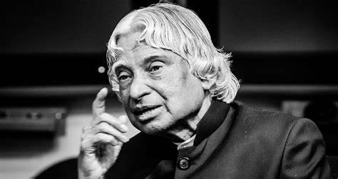
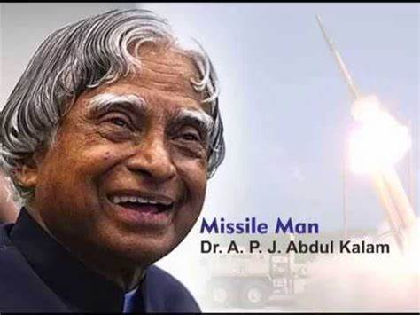

A.P.J. Abdul Kalam, in full Avul Pakir Jainulabdeen Abdul Kalam,
(born October 15, 1931, Rameswaram, India—died July 27, 2015, Shillong),
Indian scientist and politician who played a leading role in the development of India’s missile and nuclear weapons programs.
He was president of India from 2002 to 2007. Kalam earned a degree in aeronautical engineering from
the Madras Institute of Technology and in 1958 joined the Defence Research and Development Organisation (DRDO).
In 1969 he moved to the Indian Space Research Organisation, where he was project director of the SLV-III,
first satellite launch vehicle that was both designed and produced in India.
Rejoining DRDO in 1982, Kalam planned the program that produced a number of successful missiles,
which helped earn him the nickname “Missile Man.”Among those successes was Agni, India’s
first intermediate-range ballistic missile, which incorporated aspects of the SLV-III and was launched in 1989.

EDUCATION
From 1992 to 1997 Kalam was scientific adviser to the defense minister, and he later served as principal scientific adviser (1999–2001)
to the government with the rank of cabinet minister. His prominent role in the country’s 1998
nuclear weapons tests solidified India as a nuclear power and established Kalam as a national hero,
although the tests caused great concern in the international community. In 1998 Kalam put forward a countrywide plan called Technology Vision 2020,
which he described as a road map for transforming India from a less-developed to a developed society in 20 years. The plan called for, among other measures,
increasing agricultural productivity, emphasizing technology as a vehicle for economic growth, and widening access to health care and education.

AS A SCIENTIST
Kalam joined as a scientist in the aeronautical development establishment of DRDO in 1960, after graduation.
His career started with him designing a small hovercraft. However, he was not convinced by his choice of a job at the DRDO.
Kalam was transferred to ISRO in 1969, where he was the project director of India's first satellite vehicle launch.
satellite vehicle deployed the Rohini satellite successfully in near-Earth orbit in July 1980.
Kalam received the Government's LV and Slv projects between the 1970s-90s.
He directed two projects like Project Devil and Project Valiant, which aimed at developing ballistic missiles
from the successful SLV program's technology Kalam
somehow convinced Indira Gandhi and sought secret funds for these aerospace projects.
His research and immense knowledge brought him and the nation great laurels in the 1980s.
Kalam then went on to become the scientific advisor of the defence minister in 1992 and served at the
same post for five years before getting promoted to the post of principal scientific advisor to the government.
His immense role in the country's 1998 nuclear weapons tests solidified India as a nuclear power.
Kamal had now become a national hero, to be remembered for ages to come. However, the tests he conducted
caused a huge uproar in the international community. Kamal put forward a nationwide plan called
Technology Vision 2020, which according to him, was a fantastic way for transforming
the stature of India in 20 years, taking it from a developing to a developed nation.
The plan envisioned the progress of the nation by adopting advanced technology, expanding
healthcare facilities, and emphasizing the education of the masses.
ACHIVEMENTS
Abdul Kalam was a person of a golden heart who has received ample awards and achieved many things
during his life journey. In 1981 Abdul Kalam received the prestigious Padma Bhushan award.
In 1990 he received the Padma Bhushan award. The renowned personality, because of his tremendous
effort towards the nation, received the Bharat Ratna in 1997. In the same year, he was awarded the
Indira Gandhi Award for National Integration. The government of India awarded Kalam with the
Veer Savarkar award in 1998. Because of his contribution to arts, science, and technology,
he received the SASTRA Ramanujan prize in 2000. Finally, in the year 2013,
the eminent personality was bestowed with the Von Braun Award by the National Space Society.